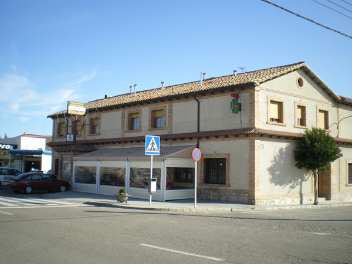
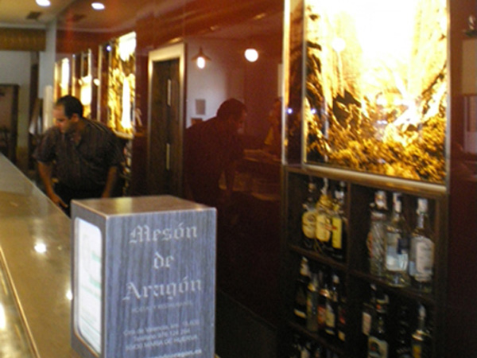
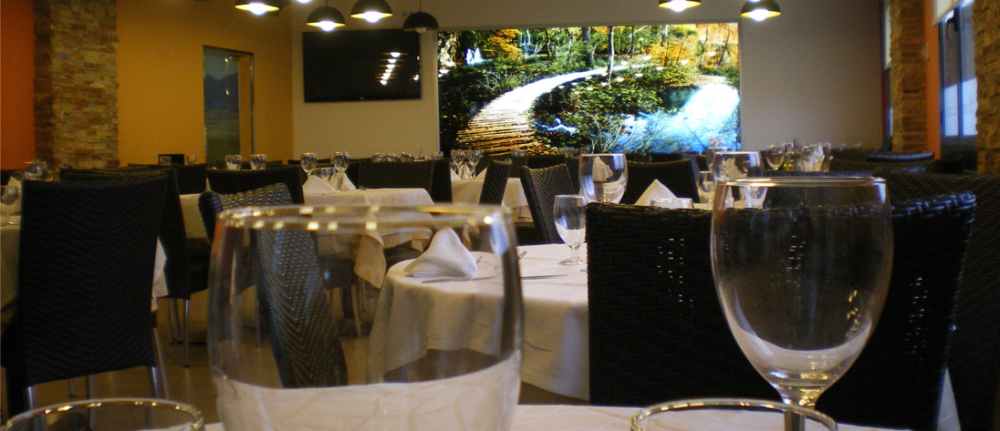
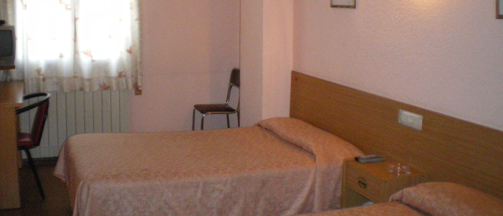
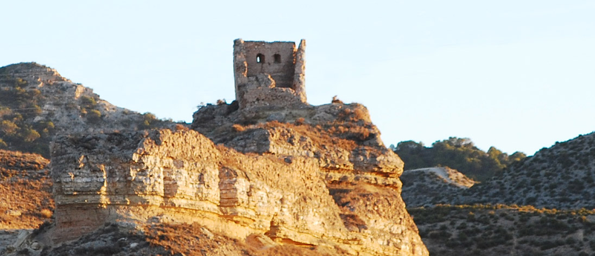
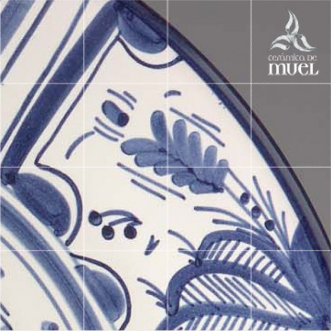
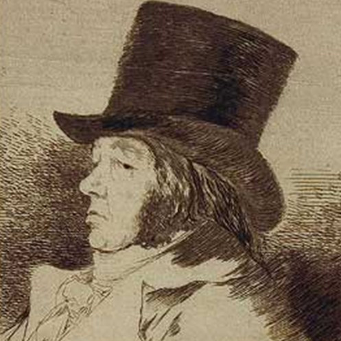
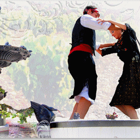
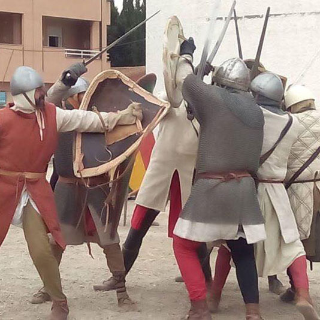
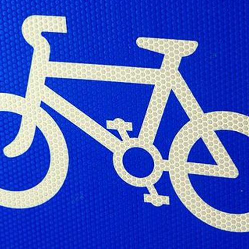

Menú diario
Laborables, de lunes a viernes
14 € / persona
- 16–20 primeros, 16–20 segundos y 16–20 postres a elegir
- Cena del viernes: 16 €
- Incluye pan, agua, vino o gaseosa
Hostal · Restaurante · Desde 1962
Fundado en 1962 como Casa Federico. Comida casera, cafetería y habitaciones en María de Huerva, con parking exclusivo para clientes.
Bienvenidos
En María de Huerva, a 300 km de Madrid, Barcelona, Bilbao, San Sebastián y Valencia y sin tener que cruzar la ciudad de Zaragoza. A 1 hora del Moncayo y a hora y media del Monasterio de Piedra y del Pirineo, tiene la posibilidad de un grato descanso en su viaje de trabajo o placer, ya sea en nuestras cómodas habitaciones o disfrutando de la buena mesa.
Con parking privado exterior en un entorno seguro y a poca distancia de la Feria de Muestras y de los polígonos industriales del área de Zaragoza, somos la mejor opción para un merecido descanso en su viaje o estancia en la zona.
Durante todos estos años hemos ampliado nuestras instalaciones, mejorado nuestro equipamiento y aprendido de nuestros clientes, manteniendo siempre una gran calidad de servicio a precios asequibles.


Restaurante
Disfrute de la mejor comida casera en comedores perfectamente climatizados, en un ambiente relajante y agradable. Menús similares a la carta, con un amplio surtido de primeros, segundos y postres a elegir, elaborados con género de primera calidad.
Así conseguimos que uno de los momentos más agradables del día se convierta en un momento para degustar y disfrutar, gracias a nuestro equipamiento y a nuestro personal experimentado.

Laborables, de lunes a viernes
14 € / persona
Sábados, domingos y festivos
28 € / persona
Banquetes y ocasiones especiales
de 26 a 40 € / persona

Alojamiento
Viajantes, transportistas o visitantes de paso: todos pueden obtener, por un precio muy económico, estancia y descanso con las mejores garantías.
Imágenes
María de Huerva y alrededores
Una población tranquila muy cerca de Zaragoza, con todos los servicios: centro de salud y urgencias, autobús, gasolinera, supermercado, piscinas, parques, biblioteca, equitación y mucho más.

A 14 km, al pie de un acantilado natural, con un dique romano junto a la ermita de la Virgen de la Fuente y las ruinas de un castillo musulmán.

Herencia de los alfareros moriscos que poblaron Muel hasta el siglo XVII, muy valorada por los expertos.

En Fuendetodos, a pocos kilómetros. De camino, no se pierda el Jardín Botánico de Jaulín, Premio Nacional de Medio Ambiente.

Todos los municipios de la D.O. Cariñena muy cerca. Visitas concertadas para grupos desde nuestro establecimiento (entre semana).

Recreación anual de la batalla histórica en María de Huerva, organizada por Almarya, y el poblado celta de Botorrita.

Rutas de ciclismo, senderismo y motociclismo de montaña hasta Fuendetodos, y paseos a caballo en la Yeguada de San Antonio.
Contacto
Desde Madrid (A-2): antes de La Muela, tome el desvío hacia Muel hasta la Autovía Mudéjar; en dirección Zaragoza, salida de Botorrita con acceso directo a María de Huerva.
Desde Valencia y Teruel: por la Autovía Mudéjar, acceso directo, no tiene pérdida.
Desde Barcelona, Huesca o Castellón: no es necesario entrar en Zaragoza. Siga dirección Teruel hasta la salida Cadrete–María de Huerva.